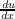
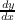
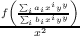
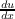
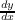
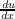
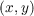
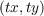

Problema 4 (EDO reducible a una de variable separable). resuelva la siguiente ecuación diferencial
consideremos
entonces = 1 + luego =  - 1

Resumen
El objetivo de curso es introducir al alumno los conceptos y métodos básicos de ecuaciones diferenciales ordinarias mostrando sus diversas aplicaciones en distintos ámbitos de la Ingeniería. El curso analiza en detalle las ecuaciones diferenciales de primer y segundo orden, los sistemas lineales de ecuaciones diferenciales y diversos métodos de resolución. También presenta herramientas del análisis cualitativo de las soluciones. En el presente texto preparado espacialmente para el curso se entregan los procedimientos básicos y ejercicios propuestos que el alumno debe desarrollar.
Las ecuaciones diferenciales son un tipo de ecuaciones cuya solución son el espacio de las funciones. Estas ecuaciones aparecen desde la física cuando se intenta modelar sistemas dinámicos. Las ecuaciones diferenciales nacen al intentar encontrar leyes que no relacionan de forma simple las magnitudes, si no más bien, la dependencia entre la magnitud buscada y sus derivadas.
Ejercicio 1. Encuentre la solución de la siguiente ecuación diferencial
Son todas aquellas ecuaciones diferenciales que se pueden separar en la forma
por lo tanto cono se puede resolver mediante una integral
en donde es una constante de integración.
Ecuaciones del tipo  =  se pueden transformar a una ecuación en variables separables dada la sustitución z =
Teorema 3. Toda ecuación diferencial de la forma = f se puede reducir a una variable separable mediante la transformación u = ax+by+c
Demostración. Consideremos la EDO
Si consideramos u = ax + by + c = a +  = -a con lo que la ecuación queda
Problema 4 (EDO reducible a una de variable separable). resuelva la siguiente ecuación diferencial
consideremos
entonces = 1 + luego =  - 1
Una ecuación diferencial de la forma
también puede ser representada por la forma
si
entonces la ecuación diferencial es Homogénea y esta se puede reducir a una variable separables mediante la transformación y = ux
Demostración. consideremos la ecuación diferencial ordinaria que sabemos es homogénea
Ejemplo 5 (Ecuación diferencial homogénea). Resolver la siguiente ecuación diferencial
Si consideramos = F entonces podemos verificar que F = F
dejamos la ecuación en su forma estándar

Problema 6. Resuelva la siguiente ecuación diferencial
La cual puede representarse de la siguiente manera
es necesario encontrar la forma de eliminar las constantes, para ello debemos resolver el sistema de ecuaciones
Al hacer esa sustitución, la ecuación diferencial nos queda de la siguiente manera
La cual es una ecuación diferencial homogénea 1
luego, al ser homogénea podemos usar la sustitución q = vp con lo cual nos queda la siguiente ecuación
Problema 7 (Reducible a variable separables, rectas paralelas).
Cuando las rectas son paralelas, la ecuación se puede reducir a directamente a variables separables
consideramos z = x - y → z′ = 1 - y′→ y′ = 1 - z′, al reemplazar nos queda que
con lo que podemos obtener, al integrar y al deshacer el cambio z = x - y
Sea la ecuación de la forma
es llamada ecuación diferencial ordinaria lineal de primer orden.
Nota 8. Toda ecuación diferencial lineal ordinaria de primer orden es una ecuación diferencial que por medio de factor integrante se puede reducir a una ecuación diferencial exacta.
Demostración. El factor integrante
con esto la ecuación diferencial queda definida por __
y es exacta, luego existe una función f que cumple que
De esta forma podemos obtener la solución general, existen formas más rápidas tomando en consideración las formas diferenciales.
Solución general de la ecuación diferencial ordinaria lineal de primer orden. Al multiplicar el factor integrante nos queda una ecuación diferencial de la siguiente forma

la cual la expresión de la izquierda es la derivada de un producto
Problema 9. Determine una función una solución continua para la ecuación diferencial
en donde
entonces hay que resolver dos ecuaciones diferenciales hacer que el límite por la derecha y por la izquierda de dichas soluciones coincidan.
El cálculo e∫ dx = ex es el factor integrante, con lo que
y en el segundo intervalo podemos
La ecuación diferencial de la forma
bajo la sustitución
con ello, al dividir en la ecuación diferencial por ambos lados por yn nos queda que
![∫ ∫ ∫
e (1-n)p(x)dx-dz+ e (1-n)p(x)dx(1- n)p(x)z = e(1-n)p(x)dx(1- n)q (x )
dx [ ∫ ] ∫
d e (1-n)p(x)dxz = e(1-n)p(x)dx(1- n)q (x )dx
∫integramos ∫ ∫
e (1-n)p(x)dxz = e (1-n)p(x)dx(1 - n)q(x)dx+ C
∫
z = e- ∫(1-n)p(x)dx e∫(1-n)p(x)dx (1 - n)q(x)dx +C
( )
1-n - ∫(1-n)p(x)dx ∫ ∫(1- n)p(x)dx
y = e e (1- n)q (x)dx + C
∘ -------------(∫----------------------------)-
y (x) = 1-ne- ∫(1-n)p(x)dx e∫(1- n)p(x)dx(1- n)q(x)dx + C
∘ -(∫-∫(1-n)p(x)dx----------------)
y (x) = 1-n --e-------∫--(1--n)q(x)dx-+-C--
e(1-n)p(x)dx
∘ -----------∫(1-n)p(x)dx----------
y (x) = n-1 ∫-∫(1--n)p(xe)dx-----------------
e (1- n)q(x)dx + C](0001_Ecuaciones_diferenciales_de_primer_orden68x.png)
Paras a su forma normal
Expondremos una aplicación al campo de pendiente para definir la estabilidad de las soluciones de una ecuación diferencial de la forma = f